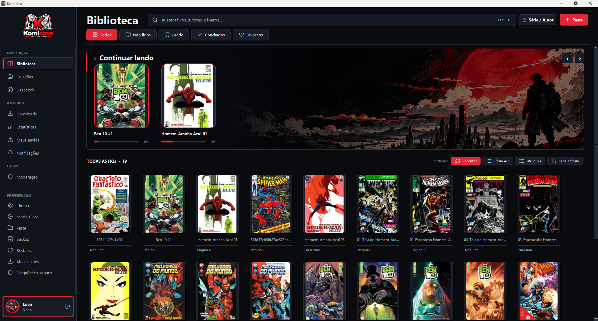

Manual brightness
Use the brightness level configured directly in Komicove whenever you read.
KOMICOVE 0.2.1.1 · OCTOBER 2026
This update gives you precise control over reader brightness and keeps the chosen mode consistent across sessions.

Use the brightness level configured directly in Komicove whenever you read.
Choose the system mode to respect the brightness already set on your device.
Komicove restores the selected mode and manual brightness level when the app opens.
The manual slider is visibly disabled whenever system brightness is selected.
MORE IN THIS CHAPTER
Canceling the preview on Android now restores the brightness configuration that was previously saved.
The updated brightness interface is available in both supported languages.
The updater now recognizes version numbers with four parts, including 0.2.1.1.
WINDOWS · LINUX · ANDROID
Komicove 0.2.1.1 is available in the official Release for all supported platforms.